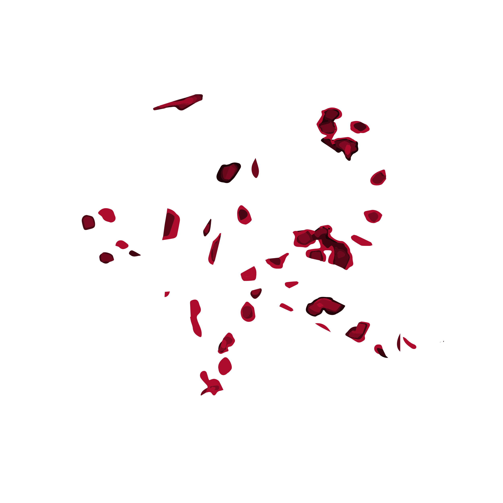

I picked my vine ring as my item because it is something that I wear almost everyday and it was the inspiration for my hand tattoo. I love wearing rings to express personal style and I enjoy using them as fidget toys to help myself concentrate. I wanted to incorporate the color green into my final design because the vines on the ring would be green if they were real and it’s my favorite color. However, I felt like there ended up being too much green in the original design which is why I added bits of red into my Processing sketch. I liked that the Processing sketch made a ring shape, it was three rings intertwined with one another, so I thought that fit perfectly with my ring. To be honest I wasn’t sure where to go with my piece after I layered my sketch of the ring on top of the Processing sketch. I made a basic pattern and wasn’t super satisfied with it, but after seeing Mars’s design I got inspiration to draw hands with the pen tool. I drew two hands forming a heart, and you can infer that they are my hands because the hand on the left is wearing the ring and the hand on the left has my tattoo. I think that adding the hands around my pattern made the final piece more meaningful and added emphasis to the ring.
